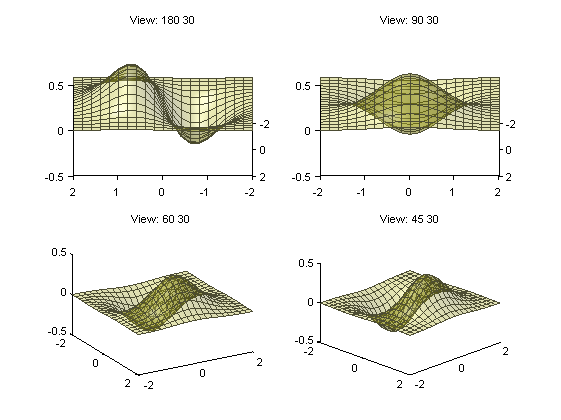
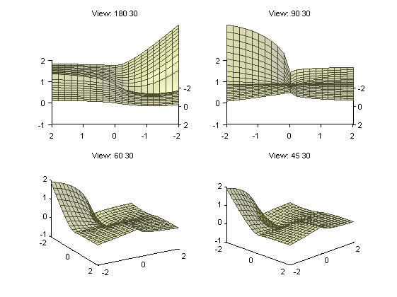
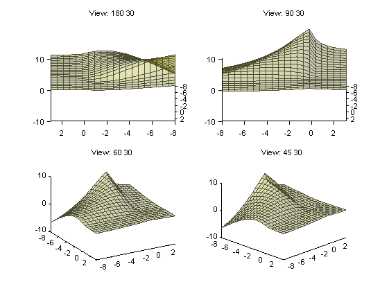

tracer4m - traces calls to methods and functions
This contribution presents a small tool to trace calls to methods and functions. There was no tracing tool for Matlab to find on the Internet and still isn't?
The entry, "Adding Debugging Code Without Changing Your Code" at the blog "Ken & Mike on the MATLAB Desktop" a couple of years ago gave me the idea to make a tool myself. I have used and modified it since then.
A tracing tool may help learning OOD/P
- understand the control flow of an application, e.g. demos, examples, etc.
- test your own code - are the methods called in the order they should
Now, my concern is: What is required of a tracing tool to become realy useful? Matlab provides the functions needed to implement a lot of functionality in a tracing tool. However, it must be robust and easy to use otherwise it will not be used.
I would appreciate comments regarding requirements on a tracing tool for Matlab.
Contents
Context
Object-oriented design is about distributing responsibilities among interacting objects. The objects should be small and focused. This results in a complex flow of calls. Furthermore, in a GUI the user manipulates controls, which in turns trigger events and chains of calls to methods and functions. Together this makes a significant difference compared to procedural programming. It is easy to get lost when stepping through an object-oriented code with the debugger. Thus, it is a bit of a challenge to design an object-oriented GUI-application for the first time. The second time too, I fear.
I try to follow some advices of www.mockobjects.com:
- Test driven
- Decide on some key classes and assign responsibilities
- Decide on minimal interfaces of the classes
- Make a "Walking Skeleton" - an absolutely minimum of the whole system that is executable. The flow of calls is the primer concern.
- Add and test details incrementally
Problem
- Matlab lacks a tool to trace calls - which methods are called an in which order. The profiler does not provide that information.
- The Matlab debugger and error reporting system knows little of what's going on once listeners are invoked by the function notify. The error message doesn't even tell which method failed.
Intent
- Make a small and simple tool that traces calls
- The tool shall support debugging and unit testing
Solution
- The key to the solution is to use side effects of "dbstop in mfile at line if tracer", where tracer always returns false. A break is set in the beginning and end of every method and function.
- "meta.class.fromName( name )" provides information on methods.
- "mlint( '-calls', filespec )" provides line numbers. ('-calls' is undocumented)
- dbstack provides the names of called and caller
- tracer4m consists of a class named, "TracerHistory", and a function, "tracer".
Discussion
There are various tools for other languages that do tracing of calls and much more. Not until now I did some googling and found various documents and discussions, most of which are ten to fifteen years old. I guess that since then tracing of calls is a standard feature in most programming IDE (e.g. log4j).
The Matlab function, publish, uses side effects of "dbstop in mfile at line if foo".
TraceHistory is a singleton - only one instance executes at one time. Two application running simultaneous will produce one shared log of calls to their methods.
The tool leaves conditional breakpoint in the code. That is by purpose because I want to be able to inspect them. That can easily be changed. Conditional breakpoints are set at the first and last executable line of the methods. If there already is a breakpoint in one of these positions that breakpoints is removed (/overwritten).
Certainly, tracing hurts the performance. However, performance will not be affected when tracing is off.
In situations with callbacks interrupting running callbacks the tracing may change the behaviour of the code. There might be more scenarios of that kind.
The method, TraceHistory/setup, is made with unit testing in mind. When studying an existing code it might be more appropriate if the files involved are found automatically.
tracer4m does not include calls to methods defined in superclasses, which might cause confusion.
Broadcasts with notify ought be included in the trace.
Strictly speaking, tracer4m doesn't trace calls, but methods being invoked.
The tool does not require extra code in the system under test.
Demonstration of usage and behaviour
I use the topic, "Example — Using Events to Update Graphs", of the Matlab on-line help to demonstrate tracer4m. The classes fcneval and fcnview are found in the folder matlabroot\help\techdoc\matlab_oop\examples. The help explains in detail how to run this example.
feobject = fcneval( @(x,y) x.*exp(-x.^2-y.^2), [-2 2 ] );
fcnview.createViews( feobject ); % createViews is a static method
set.FofXY finished
Disable two of the four plots to limit the output of this demo. Return to the demo by typing "return<Enter>".
... keyboard
Create a logging object and set up fcneval and fcnview for tracing. The method, createViews is defined in a separate file (what's the point of doing that?) and need to be set up as well.
log = TraceHistory.Instance;
log.setup( { 'fcneval', 'fcnview', 'createViews' } )
The next step in the example in the example will cause calls of methods
feobject.FofXY = @(x,y) x.*exp(-x.^.5-y.^.5);
listenUpdateGraph finished listenUpdateGraph finished listenUpdateGraph finished listenUpdateGraph finished set.FofXY finished
Guess which methods where called!
disp( log )
--- tracer4m ---
tracer4m_demo
fcneval.set.FofXY
fcnview.listenUpdateGraph
fcnview.updateSurfaceData
fcneval.get.Data
fcneval.grid
fcneval.get.Data
fcneval.grid
fcneval.get.Data
fcneval.grid
fcnview.listenUpdateGraph
fcnview.updateSurfaceData
fcneval.get.Data
fcneval.grid
fcneval.get.Data
fcneval.grid
fcneval.get.Data
fcneval.grid
fcnview.listenUpdateGraph
fcnview.updateSurfaceData
fcneval.get.Data
fcneval.grid
fcneval.get.Data
fcneval.grid
fcneval.get.Data
fcneval.grid
fcnview.listenUpdateGraph
fcnview.updateSurfaceData
fcneval.get.Data
fcneval.grid
fcneval.get.Data
fcneval.grid
fcneval.get.Data
fcneval.grid
Looks ok to me. However, I have not studied the example thoroughly enough to be sure. That's the problems with test, one must know the result beforehand. Or consult an oracle.
Exercises: When feobject.FofXY executes which methods are called in what order? Firstly, find that out by inspection of the code. Secondly, figure it out by stepping through the code with the debugger. Run
feobject = fcneval( @(x,y) x.*exp(-x.^2-y.^2), [-2 2 ] );
fcnview.createViews( feobject );set a breakpoint, dock the figure to keep it visible and run
feobject.FofXY = @(x,y) x.*exp(-x.^.5-y.^.5);
Did tracer4m get the trace right?
Now, clear the log to and do the next step in the demo.
log.clearHistory feobject.Lm = [-8 3]; drawnow disp( log )
--- tracer4m ---
tracer4m_demo
fcneval.set.Lm
fcnview.createLisn/@(src,evnt)listenLm(this,src,evnt)
fcnview.listenLm
fcnview.lims
fcnview.updateSurfaceData
fcneval.get.Data
fcneval.grid
fcneval.get.Data
fcneval.grid
fcneval.get.Data
fcneval.grid
fcnview.createLisn/@(src,evnt)listenLm(this,src,evnt)
fcnview.listenLm
fcnview.lims
fcnview.updateSurfaceData
fcneval.get.Data
fcneval.grid
fcneval.get.Data
fcneval.grid
fcneval.get.Data
fcneval.grid
fcnview.createLisn/@(src,evnt)listenLm(this,src,evnt)
fcnview.listenLm
fcnview.lims
fcnview.updateSurfaceData
fcneval.get.Data
fcneval.grid
fcneval.get.Data
fcneval.grid
fcneval.get.Data
fcneval.grid
fcnview.createLisn/@(src,evnt)listenLm(this,src,evnt)
fcnview.listenLm
fcnview.lims
fcnview.updateSurfaceData
fcneval.get.Data
fcneval.grid
fcneval.get.Data
fcneval.grid
fcneval.get.Data
fcneval.grid
 This too looks ok, but why did the text appear before the plots? That was the last command of this example.
There isn't a method of TraceHistory to remove the registered files, thus I use dbclear.
dbclear all delete( gcf ) clear( 'tracer', 'TraceHistory', 'fcnview.fcnview' ) clear( 'fcnview.createViews', 'fcneval.fcneval' ) clear( 'feobject', 'log' ) disp('That should clear all tracer4m stuff') disp(' ')
That should clear all tracer4m stuff
--- tracer4m ---
tracer4m_demo
testfile4tracer
testfile4tracer/nested_01
testfile4tracer/nested_01/nested_11
testfile4tracer/nested_02
testfile4tracer/nested_02
subfunction_01
subfunction_02
subfunction_02
Output in the wrong order. The tracer output above is created by disp(log) in the last line of this cell! PUBLISH inserts the output in the wrong place. That's because of the bug "#496201, Summary: Publishing a MATLAB file containing subfunctions: sometimes the output appears in the wrong place in the document." - I guess.
tracer4m can trace calls to functions in ordinary m-functions.
log = TraceHistory.Instance;
log.setup( { 'testfile4tracer' } )
testfile4tracer();
disp( log )
This is correct, i.e. the output of disp(log) that appear in of the previous cell.
The method, TraceHistory/get, returns the cell array, which it uses internally to log the calls reported by tracer. The cell array contains two columns per call, the first is created at the beginning of the method and the second at the end. The rows contain in order:
- the name of the caller
- the name of the method/function being called
- ID - with handle objects an unique ID might be important (not yet implemented)
- Time of creation of handle objects that have a property named, created (doesn't work any longer )
- 'begin' / 'end'
trace4m can be integrated in automatic tests. The code needed in the test will be something similar to this
rpt = log.get; assert( any( strcmp( 'testfile4tracer/nested_02', rpt( 2, : ) ) ) ... , 'tracer4m_demo:NoCallToMethod' ... , 'The method, "%s", was not called' ... , 'testfile4tracer/nested_02' )
The End